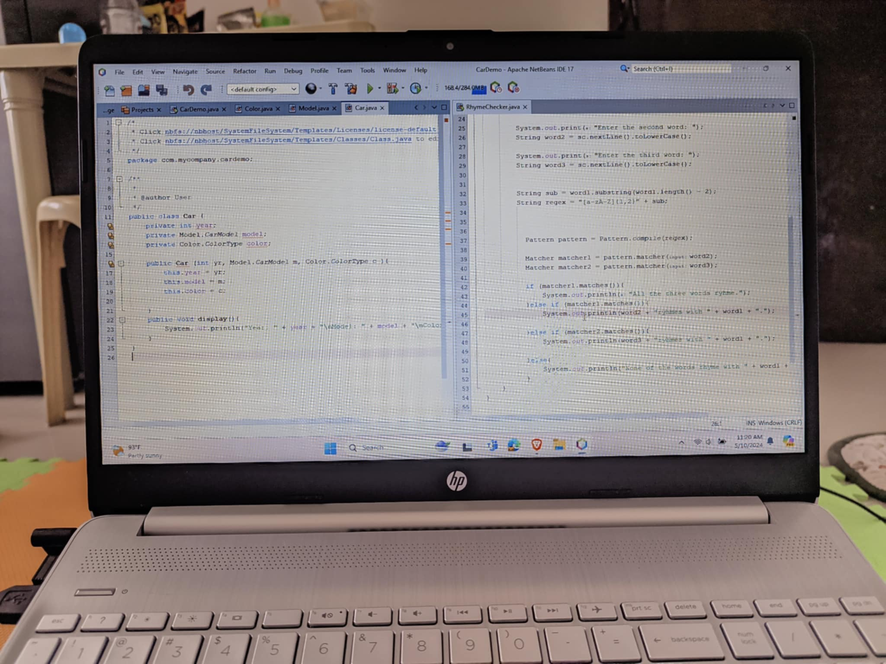
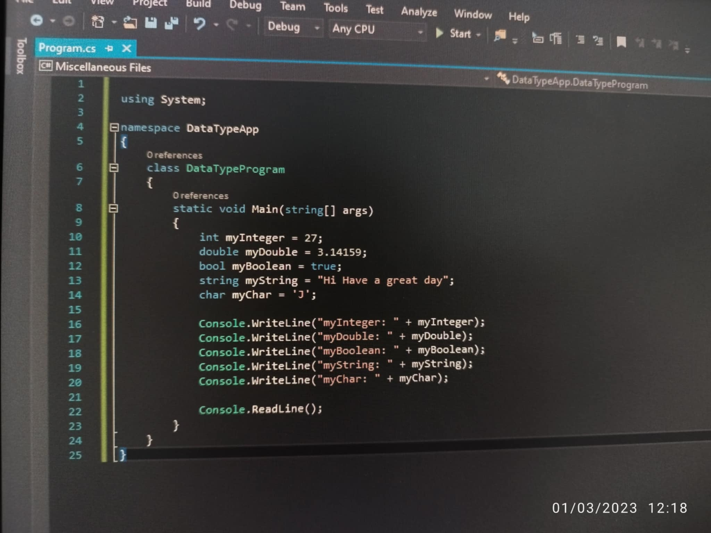

My Journey
My first journey as an Information Technology student at STI Alaminos was a thrilling and transformative plunge into the digital world. Stepping onto the campus, I was immediately struck by the vibrant atmosphere and the promise of a future shaped by technology.
Learning in JAVA Language
This is my First Task of being aspiring future programmer
The first few weeks were a mix of excitement and nervousness. I remember sitting in my first class, surrounded by fellow students, all of us eager to learn the basics of programming. The instructors were not just teachers; they were mentors who guided us through the complexities of coding languages and software development. Each lesson was a step deeper into the world of technology, and I found myself captivated by the endless possibilities that lay ahead.
Learning in C# Language
Learning about algorithms, data structures, and the intricacies of software design felt like unlocking a new language. The hands-on projects were particularly exhilarating, allowing us to apply theoretical knowledge in practical scenarios.
Comments